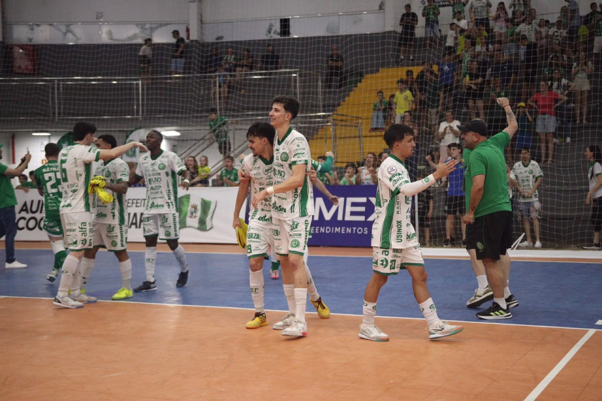

É HOJE
O domingo, 27 de setembro de 2026, pode reservar um dos capítulos mais marcantes do futsal do Oeste catarinense. A partir das 16h, a Prefeitura de Chapecó/Chapecoense/Unochapecó entra em ação na Arena Ivo Sguissardi, em Xanxerê, para disputar a grande final da Copa Sul contra o Campo Mourão (PR).
Além da chance de levantar uma taça inédita, o confronto vale muito mais: o vencedor garante vaga direta à seleta Copa dos Campeões, o próximo passo na corrida rumo à Supercopa do Brasil, que aponta o representante do País na Taça Libertadores da América.
Sócio e ingressos
A torcida sempre fez a diferença para o Verdão das Quadras. Neste momento especial para o clube, a equipe comandada pelo técnico Leo Schroeder espera contar, mais uma vez, com o incentivo vindo das arquibancadas. A agremiação reforça que o sócio não paga, bastando apresentar a carteirinha.
Para quem precisar de ingresso, é possível comprar de forma antecipada pelos sites chapecoensefutsal.com.br e ingressojogo.com.br. No ginásio, a venda inicia às 13h.
O bilhete custa R$ 30 (inteira) e R$ 15 (meia). Criança até 12 anos tem entrada gratuita, desde que acompanhada por um responsável e portando documento de identificação.

A classificação
Mandante da competição, a Chapecoense chega motivada após uma eletrizante vitória de virada por 2 a 1 sobre o Passo Fundo (RS) na semifinal. Agora, o desafio é superar os paranaenses do Campo Mourão, adversários conhecidos da fase de grupos e que avançaram à decisão após um dramático 5 a 4 (4 a 4 no tempo normal) contra o Jaraguá na prorrogação. O adversário disputa a Liga Nacional principal, onde está nas quartas de final, vaga obtida ao eliminar o Cascavel (PR).
Com promessa de casa cheia, a equipe comandada pelo técnico Leo Schroeder joga não apenas pelo troféu, mas para consolidar de vez este momento histórico do projeto do futsal de Chapecó.
Crédito das fotos: @rogersilva_fotografia/@achapefutsal